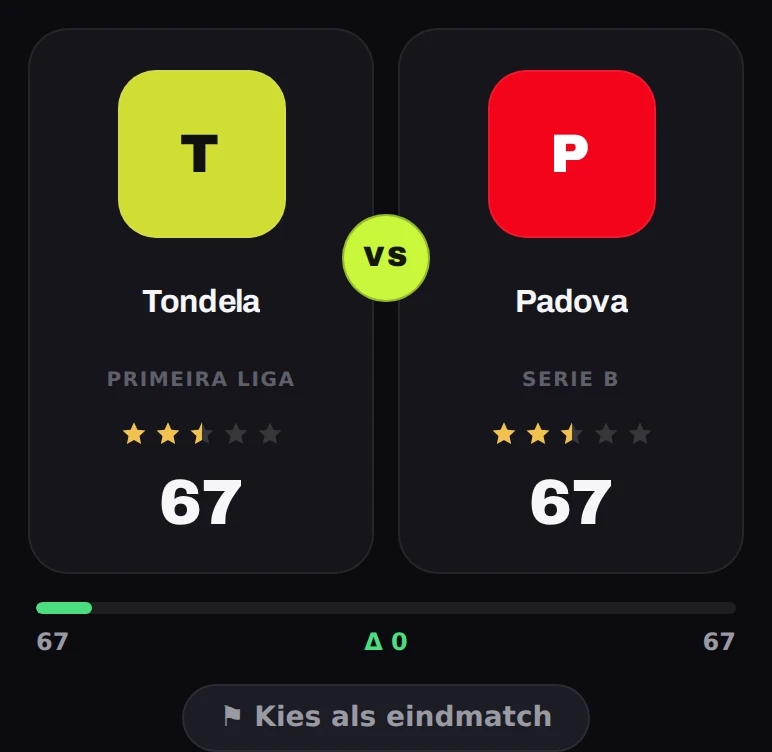
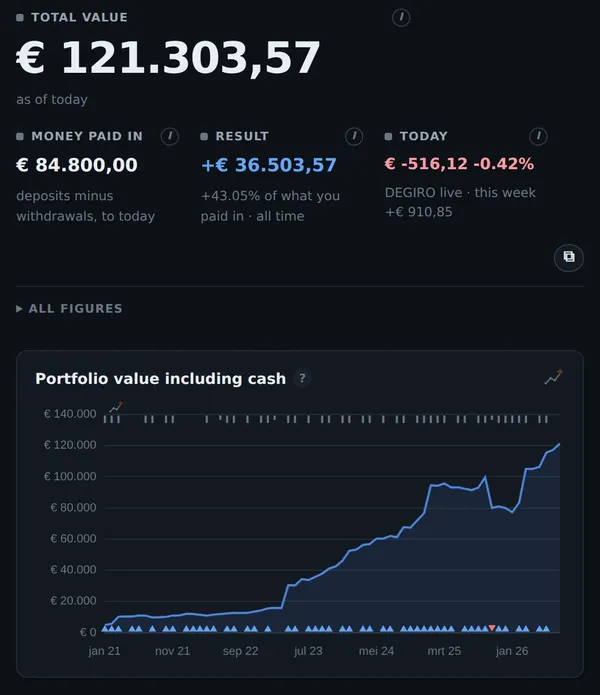
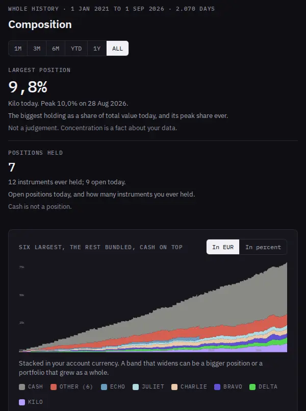
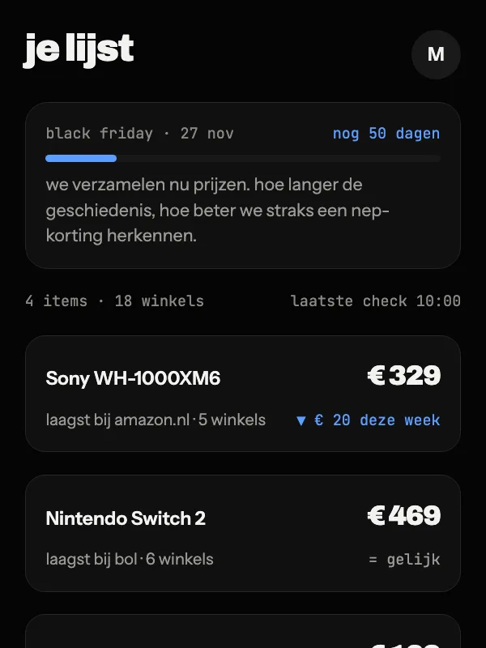
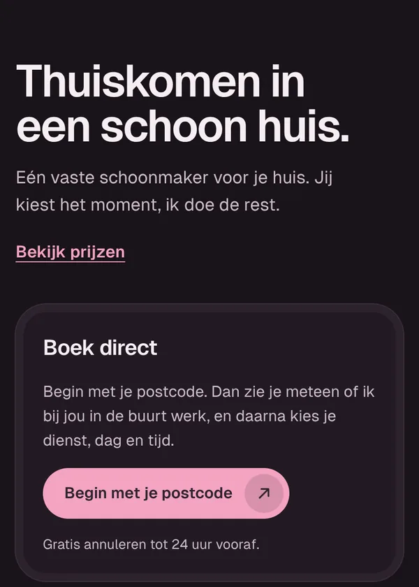

01 — webapp · werkt offline
EVENMATCH
Teamkiezer voor EA FC Kick-Off, twee tegen twee. Eén knop, twee teams met dezelfde sterren, en de app zegt erbij hoe ver de squad-ratings uit elkaar liggen.

Vijf stuks, af genoeg om te delen. De rest staat op GitHub.
01 — webapp · werkt offline
Teamkiezer voor EA FC Kick-Off, twee tegen twee. Eén knop, twee teams met dezelfde sterren, en de app zegt erbij hoe ver de squad-ratings uit elkaar liggen.

02 — chrome-extensie · DEGIRO
Wat je DEGIRO-rekening elke dag waard was, sinds je hem opende. Die grafiek geeft DEGIRO zelf niet. Alles blijft in je eigen browser, zonder server of account.

03 — chrome-extensie · nog niet te installeren
Zusje van Asteria, voor Trading 212. Dagwaarde, inleg en weging per positie, met een sleutel die alleen mag lezen. Af, maar of delen mag onder de API-voorwaarden is nog een open vraag.

04 — webapp · op uitnodiging
Privé prijstracker. Je plakt een link, prijswacht volgt de prijs bij Nederlandse winkels en laat per dag zien wat hij deed. Zonder account zie je alleen het inlogscherm. Meldingen en het oordeel over Black Friday-kortingen komen nog.

05 — website en portaal · nog niet live
Website, klantportaal en beheer voor een schoonmaakbedrijf van één persoon. Klanten boeken zelf en zien hun facturen, de eigenaar regelt diensten, prijzen en agenda vanaf de telefoon. Gebouwd voor een klant, daarom zonder naam en zonder link.
